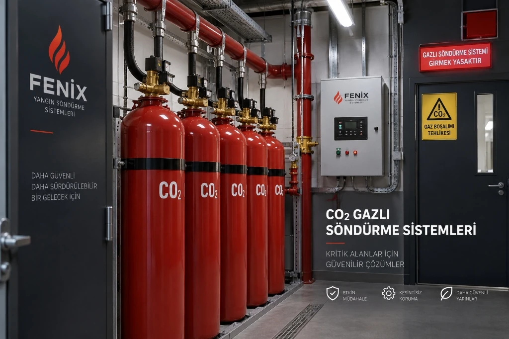

CO₂ Gazlı Yangın Söndürme Sistemleri
Trafo merkezleri, jeneratör kabinleri ve endüstriyel prosesler için oksijen boğma prensibiyle çalışan yüksek etkili karbondioksitli yangın söndürme çözümleri.
Karbondioksit (CO₂) gazlı yangın söndürme sistemleri; elektriksel iletkenliği olmayan, kalıntı bırakmayan ve derinlemesine nüfuz edebilen gaz tahliyesiyle yüksek riskli endüstriyel alanlarda etkin koruma sağlar.

CO₂ Gazlı Yangın Söndürme Sistemi Nedir?
Karbondioksit (CO₂) gazlı yangın söndürme sistemleri, yüksek risk taşıyan ve insan bulunmayan endüstriyel tesisler ile teknik hacimler için geliştirilmiş fiziksel söndürme çözümleridir. Karbondioksit; renksiz, kokusuz, elektriksel iletkenliği bulunmayan ve havadan yaklaşık 1.5 kat daha ağır bir gazdır.
Sistem, korunan hacim içerisindeki oksijen seviyesini yanmanın devam edemeyeceği seviyelerin altına (tipik olarak %15'in altına) düşürerek boğma etkisi yaratır. Aynı zamanda sıvı fazdan gaz fazına geçerken gerçekleşen ani genleşme ile ortam ısısını soğutarak yangının kontrol altına alınmasına katkı sağlar.
Uluslararası standartlarda CO₂ sistemleri; yüzey yangınlarının yanı sıra derine nüfuz eden korlu (deep-seated) yangın senaryolarında da etkili bir seçenek olarak değerlendirilir. Bununla birlikte CO₂, havadaki oksijeni tüketerek solunamaz bir atmosfer oluşturduğundan ötürü insan hayatı açısından ciddi asfiksi (boğulma) riski taşır ve özel güvenlik kilitleri gerektirir.
CO₂ Yangın Söndürme Sistemi Nasıl Çalışır?
Karbondioksitli yangın söndürme sistemlerinin çalışma dizisi, uygulanan sistem konfigürasyonuna (hacimsel boğma veya lokal uygulama), riskin niteliğine ve mahallin güvenlik gereksinimlerine göre projelendirilir. Standart bir otomatik sistemde süreç genel olarak şu aşamaları takip eder:
Yangının Algılanması
Korunan alandaki optik alev, duman veya termal dedektörler yangın belirtilerini tespit eder. Yanlış aktivasyonları önlemek amacıyla sistem çoğunlukla çapraz bölge (cross-zone) prensibiyle çift algılama sinyali bekler.
Sistem Aktivasyonu ve Tahliye Uyarısı
Algılama sinyali ile birlikte sesli ve ışıklı ön boşaltma alarmları (siren ve flaşörler) devreye girer. Alandaki personelin güvenle çıkışı için tasarlanan tahliye gecikmesi (pre-discharge delay) sayacı başlar.
CO₂ Gazının Boşaltılması
Tahliye süresinin dolmasıyla vana aktüatörü tetiklenir; yüksek basınçlı silindir bataryasındaki CO₂ gazı borulama hattı ve özel nozullar vasıtasıyla korunan hacme veya doğrudan tehlike noktasına hızla püskürtülür.
Oksijen Seviyesinin Düşürülmesi
Boşalan ağır gaz ortam havasındaki oksijen oranını hızla yanma sınırının altına çekerek alevlenmeyi boğar. Gazın ani genleşmesi sonucu oluşan soğutma etkisi de reaksiyonun bastırılmasına katkı sağlar.
Söndürme ve Yeniden Tutuşmanın Önlenmesi
Tasarım konsantrasyonu ilgili standartta öngörülen tutma süresi (hold-time) boyunca korunur. Derin yangın korlarının tamamen sönmesi sağlandıktan sonra mahalli güvenli hale getirmek için kontrollü tahliye havalandırması yapılır.
Önemli Mühendislik Uyarısı: Gerçek çalışma dizisi kullanılan algılama teknolojisine, mekanik gecikme valflerine ve projenin güvenlik senaryolarına göre değişiklik gösterir. CO₂ sistemlerinde personelin alanı tahliye etmesi ve bakım esnasında mekanik kilit vanasının (lock-off valve) kapalı tutulması hayati bir kuraldır.
CO₂ Sistemleri Nerelerde Kullanılır?
Karbondioksitli söndürme sistemleri, su veya kimyasal tozların ekipmana kalıcı zarar verebileceği, derinlemesine nüfuz gerektiren ve insan varlığının kontrollü olduğu endüstriyel alanlarda uygulanır:
Yüksek gerilim transformatörleri ve dağıtım merkezlerinde elektriksel iletkenliği olmayan derin koruma. Trafo Odası Söndürme çözümlerimizi inceleyin.
Dizel jeneratörler, gaz türbinleri ve makine dairelerinde yüksek çalışma sıcaklığı ve akaryakıt buharı risklerine karşı hızlı müdahale.
MCC panoları, ana dağıtım merkezleri ve kablo geçişlerinde kalıntısız gaz tahliyesi. Pano İçi Söndürme Sistemleri sayfamızı ziyaret edin.
Endüstriyel kaplama hatları, kurutma fırınları ve sprey kabinlerinde parlayıcı solvent buharı yangınlarına karşı lokal veya hacimsel boğma.
Enerji santralleri ve fabrikalarda yoğun kablo geçiş yollarında kablo izolasyonundan kaynaklanan inatçı yangınların boğulması.
Daldırma tankları, hidrolik üniteler, madeni yağ depolama ve kimyasal karıştırma kazanlarında lokal nozullu yangın koruması.
Su ile temas etmemesi gereken tarihi ve teknik doküman arşivlerinde, insan güvenliği tedbirleri sağlanarak uygulanan özel çözümler.
Gemi makine daireleri, kargo ambarları ve pompa odalarında uluslararası denizcilik (IMO / SOLAS) regülasyonlarına uygun söndürme.
CO₂ Total Flooding ve Local Application
Uluslararası teknik referanslarda CO₂ söndürme sistemleri, korunan riskin geometrisine ve muhafazanın yapısına göre iki temel mühendislik yaklaşımıyla projelendirilir:
Total Flooding (Hacimsel Boğma)
Tamamen kapalı veya havalandırma açıklıkları otomatik olarak kapatılabilen hacimlerde uygulanır. Söndürücü CO₂ gazı boru ağı vasıtasıyla odanın geneline homojen biçimde boşaltılır. Tüm hacimdeki oksijen konsantrasyonu yanmayı durduracak eşiğin altına çekilir.
- Trafo merkezleri ve şalt odaları
- Kapalı jeneratör ve türbin muhafazaları
- Sızdırmazlığı sağlanmış arşiv ve depo odaları
Local Application (Lokal Uygulama)
Etrafında kapalı bir oda veya muhafaza bulunmayan açık endüstriyel makinelerde kullanılır. Özel açılı nozullar doğrudan tehlike kaynağının (örneğin daldırma tankı veya pres silindiri) üzerine odaklanır ve alev kaynağı üzerinde yerel bir CO₂ perdesi oluşturur.
- Endüstriyel daldırma ve kaplama tankları
- Büyük hidrolik pompalar ve yağlama üniteleri
- Matbaa baskı hatları ve açık endüstriyel makineler
CO₂ Sistemlerinin Avantajları ve Sınırları
CO₂ söndürme sistemleri belirli endüstriyel tehlikeler için güçlü bir araç olmakla birlikte, güvenlik kısıtları nedeniyle her mahalde serbestçe uygulanamaz:
Teknik Avantajlar
- ✓ Kalıntısız ve Temiz: Deşarj sonrasında katı tortu veya kimyasal kalıntı bırakmaz; su gibi paslanma veya korozyon oluşturmaz.
- ✓ Derin Yangın Etkinliği: Poroz ve korlaşan malzemelerin içine nüfuz ederek içten içe süren deep-seated yangınları söndürmede etkilidir.
- ✓ Lokal Uygulama Kabiliyeti: Kapalı oda şartı aranmaksızın münferit tehlike noktalarına odaklı koruma imkanı verir.
- ✓ Elektriksel İletkensizlik: Yüksek dielektrik direnci sayesinde yüksek voltajlı ekipmanlarda ark oluşturmadan müdahale eder.
Sınırlar ve Yaşamsal Güvenlik
- ⚠ Asfiksi (Boğulma) Tehlikesi: CO₂ oksijeni tüketerek solunamaz ortam yaratır. İnsan bulunan ortamlarda can güvenliği riski doğurur.
- ⚠ İnsanlı Alan Kısıtı: Ofis, veri merkezi veya personelin sürekli bulunduğu alanlarda CO₂ yerine FM-200 veya Novec 1230 temiz gazları tercih edilmelidir.
- ⚠ Zorunlu Güvenlik Kilitleri: Tahliye gecikmesi, sesli/ışıklı ikazlar ve bakım esnasında mekanik kilit vanası (lock-off valve) kullanımı şarttır.
- ⚠ Görüş Kısıtlılığı ve Soğuk Şok: Boşalma anında ani soğuma ile yoğun sis tabakası oluşarak ortamdaki görüş mesafesini kısıtlar.
Hayati Güvenlik Uyarısı (Life Safety Warning)
Karbondioksit (CO₂), yangını ortamdaki oksijen seviyesini boğucu oranlara düşürerek söndürdüğünden dolayı insanlar için doğrudan ve ölümcül bir boğulma tehlikesi oluşturur; solunabilir temiz gazlardan (FK-5-1-12, HFC-227ea) tamamen farklıdır. Sürekli insan bulunan mahallerde uygulanmamalıdır; uygulama alanlarında boşalma öncesi sesli ikaz, tahliye gecikmesi ve mekanik bakım kilit vanası donanımları tavizsiz projelendirilmelidir.
CO₂ Sistem Tasarımı ve Güvenlik
CO₂ söndürme sistemlerinin mühendislik tasarımı, korunacak riskin analizi ve can güvenliği önlemlerinin eksiksiz entegrasyonunu zorunlu kılar:
Tehlike Sınıfı ve Yangın Türü
Korunan alandaki yanıcı maddeler yüzey yangını (parlayıcı sıvılar) veya derin yangın (kablo demetleri, korlaşan katılar) senaryolarına göre sınıflandırılır ve gereken gaz konsantrasyonu buna göre belirlenir.
Muhafaza Geometrisi ve Tutma Süresi
Hacimsel boğma projelerinde odanın sızdırmazlık durumu, havalandırma damperlerinin otomatik kapanması ve gazın ortamda gereken süre boyunca kalması (hold-time) hesaplanır.
Tahliye Uyarısı ve Güvenlik Kilitleri
Gaz deşarjından önce devreye giren pnömatik kornalar, flaşörler, kokulandırma cihazları ve bakım sırasında hattı mekanik olarak kapatan emniyet kilit vanaları (lock-off valve) entegre edilir.
Uluslararası Tasarım Standartları Referansı
Karbondioksitli yangın söndürme sistemlerinin tasarımı, silindir bataryası yerleşimi, boru hidrolik hesapları ve güvenlik gereksinimleri uluslararası alanda NFPA 12 (Standard on Carbon Dioxide Extinguishing Systems) ile ISO 6183 ve TS EN 15004 ilkeleri çerçevesinde ele alınmaktadır.
Denizcilik uygulamalarında ise IMO (International Maritime Organization) ve SOLAS kuralları uyarınca makine daireleri ve ambar koruma gereksinimleri bağımsız olarak değerlendirilir. Sistem seçimi ve mühendisliği her proje için özel risk analizine dayandırılmalıdır.
CO₂ Gazlı Yangın Söndürme Sistemleri Fiyatları
CO₂ gazlı yangın söndürme sistemlerinin projelendirme ve kurulum maliyetleri, tesisin teknik parametrelerine ve güvenlik kapsamına göre proje bazında belirlenir:
Oda hacmi veya lokal uygulama alanının geometrisine göre gereken CO₂ gazı miktarı.
Yüksek basınçlı 45L veya 67L dikişsiz çelik silindir sayısı, manifold ve vana düzeni.
Total flooding oda borulaması veya lokal uygulama odaklı yüksek basınçlı nozul tesisatı.
Tahliye gecikme ünitesi, pnömatik kornalar, kokulandırma cihazı ve kilit vanaları.
Tesisiniz İçin Mühendislik Keşfi ve Fiyat Teklifi Alın
Trafo odaları, jeneratör kabinleri ve endüstriyel proses alanlarınız için tehlike analizini gerçekleştiriyor, standartlara uygun doğru CO₂ sistem konfigürasyonuyla projelendirme teklifi sunuyoruz.
Keşif ve Fiyat Teklifi AlınSık Sorulan Sorular
Karbondioksitli yangın söndürme sistemleri hakkında en sık sorulan teknik ve güvenlik sorularının yanıtları.
CO₂ (karbondioksit) gazlı yangın söndürme sistemi; basınç altında sıvılaştırılmış karbondioksit gazını korunan alana boşaltarak ortamdaki oksijen seviyesini yanma sınırının altına düşüren ve soğutma etkisiyle yangını bastıran fiziksel bir yangın söndürme sistemidir.
Hayır. Karbondioksit, ortamdaki oksijeni hızla tüketerek solunum için yetersiz hale getirdiği için insan hayatı açısından doğrudan boğulma (asfiksi) riski oluşturur. Bu nedenle sürekli insan bulunan hacimlerde kullanılmamalıdır; yalnızca insansız veya boşaltma öncesi tahliyesi kesin olarak güvenceye alınan kontrollü alanlarda uygulanır.
Karbondioksitli sistemler; transformatör odaları, jeneratör daireleri, kablo tünelleri, boya kabinleri, yanıcı sıvı depolama tankları, endüstriyel proses makineleri ve deep-seated (derinlemesine) kor yangını riski taşıyan kapalı hacimlerde sıklıkla tercih edilir.
Total flooding (hacimsel boğma) yönteminde gaz kapalı bir odanın tamamına yayılarak tüm hacimdeki oksijen oranını düşürür. Local application (lokal uygulama) yönteminde ise kapalı muhafazası bulunmayan açık makinelerde veya daldırma tankı gibi özel tehlike noktalarında nozullar doğrudan alev yüzeyine yönlendirilir.
Evet. Karbondioksit elektriksel olarak iletken değildir ve dielektrik direnci yüksektir. Enerjili elektrik panoları, trafolar ve şalt merkezlerinde su bazlı söndürücülerin neden olduğu kısa devre ve iletkenlik risklerini oluşturmadan güvenle uygulanabilir.
Fiyatlandırma; korunacak hacmin geometrisine, yangın tehlikesinin sınıfına (yüzeysel veya derin yangın), total flooding veya lokal uygulama konfigürasyonuna, gereken silindir sayısına, boru şebekesi metrajına ve güvenlik donanımlarına (tahliye gecikmesi, kilit vanaları) göre mühendislik keşfi sonrasında belirlenir.
İlgili Sistemler ve Tamamlayıcı Çözümler
Fenix Yangın bünyesinde endüstriyel tesisler ve kritik binalar için sunduğumuz diğer yangın söndürme ve kontrol çözümleri.
İnsan bulunan sistem ve sunucu odaları için temiz ajanlı gazlı söndürme.
Sistem İncele →Çevre dostu FK-5-1-12 temiz gazlı yangın söndürme sistemleri.
Sistem İncele →Elektrik ve otomasyon panoları için noktasal mikro gazlı söndürme.
Sistem İncele →Yüksek gerilim trafoları ve şalt odaları için özel koruma projeleri.
Sektör İncele →Endüstriyel mutfak pişirme hatları için otomatik söndürme sistemleri.
Sistem İncele →Kapı fanı testi ile gaz tutma süresinin standart doğrulaması.
Hizmet İncele →CO₂ Yangın Söndürme Sistemi Teklifi Alın
Trafo odası, jeneratör kabini veya endüstriyel prosesleriniz için teknik keşif ve anahtar teslim CO₂ sistemi projelendirme teklifi hazırlıyoruz.